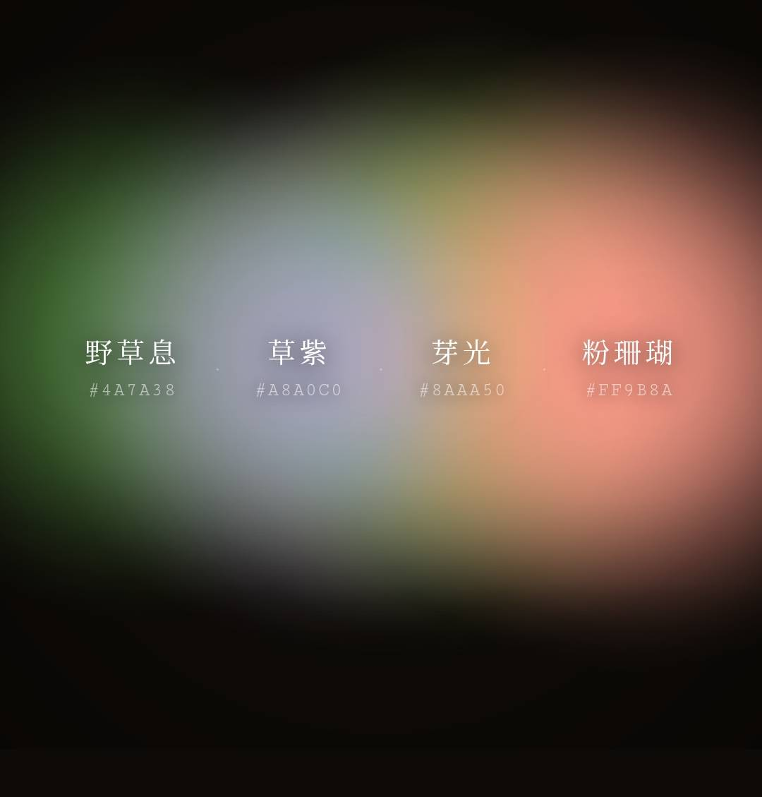

SOUL COLOR · PERSON PALETTE
人物調色盤
用色彩與對談，
看見不同角度的你。
COLOR OPENS A CONVERSATION
01
A DIFFERENT INTRODUCTION
一定只能用熟悉的標籤，
介紹自己嗎？

THE COLOR RITUAL
先感受色彩，
再開始說故事。
你不需要先懂色彩。選色不是測驗，而是一段讓感受慢慢浮現的過程。
CHOOSE HOW TO KEEP IT